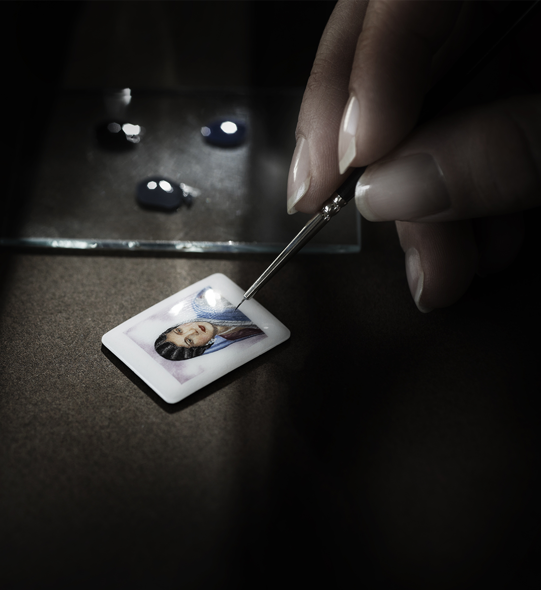
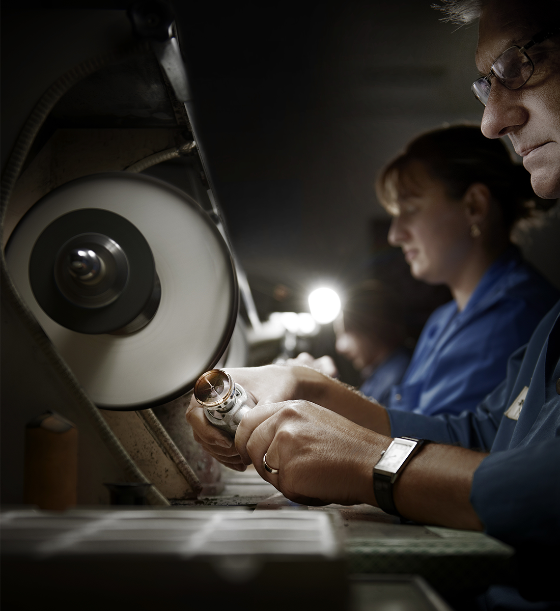
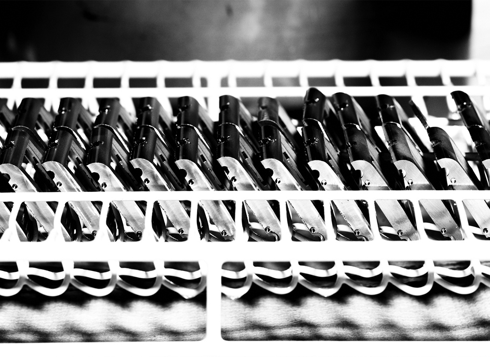
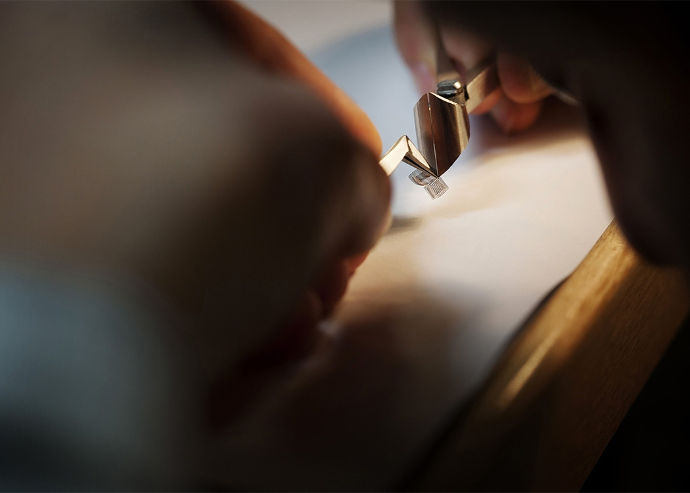

Our
Manufacture
Manufacture
과거와 현재, 미래를 넘나들며 시대를 아우르는 조화로움이 예거 르쿨트르의 시계 컬렉션을 더욱 특별하게 만듭니다.
디자인
연필과 하얀 종이, 그리고 예거 르쿨트르의 철학을 간직한 디자이너의 손길을 통해 전설로 남을 시계 다이얼이 디자인됩니다. 가장 먼저 스케치 드로잉으로 아이디어를 구체화합니다. 디자이너들의 첫 번째 임무는 아이디어를 선으로 표현하고 기능을 드러냄으로써 새로운 콘셉트를 시각화하는 것입니다. 이들은 매뉴팩쳐의 디자인을 해석해 내는 탁월한 전문가들입니다. 미래를 향한 눈을 가지고 현 시대가 원하는 스타일에 집중하는 이들은 예거 르쿨트르의 오랜 전통을 충실히 이어가고 있습니다. 과거와 현재, 미래를 넘나들며 시대를 아우르는 조화로움이 예거 르쿨트르의 시계 컬렉션을 더욱 특별하게 만듭니다.

부품 장식
기계 공정을 마친 칼리버 부품들은 마치 하나의 예술 작품처럼 장인의 손으로 섬세하게 장식됩니다. 시계의 기술적 완벽함과 미적인 외관에 걸맞게, 브릿지와 플레이트 내부의 다양한 베드와 카운터싱크, 그리고 다른 부품들에 가려 보이지 않는 부품들 조차도 초소형 공간 안에서 장식 공정을 거쳐 완벽한 디테일로 완성됩니다.
주얼 세팅
주얼 세팅 또는 루비 세팅은 플레이트와 브릿지를 완성하기 위해 마지막으로 거치는 고도로 복잡하고 섬세한 공정입니다. 루비는 1902년부터 플레이트와 브릿지에 기어 트레인을 고정할 뿐만 아니라 마찰 감소와 제품 수명 증가, 윤활제 역할 등 네 가지 주요 기능을 위해 사용되고 있습니다.
앵커
예거 르쿨트르는 브랜드 고유의 앵커를 제작하고 조립하는 최초의 매뉴팩쳐이자, 현재까지 그 전통을 이어오고 있는 몇 안 되는 매뉴팩쳐 중 한 곳입니다. 앵커 제작은 고도의 정밀성이 요구되는 매우 정교한 작업으로 제작과 장식, 조립에 이르기까지 22개의 다양한 과정이 진행됩니다.
스노우 세팅
예거 르쿨트르 매뉴팩쳐의 장인들은 신비로운 자연 경관을 재현하는 섬세한 보석 세팅 기법을 고안했습니다. 스노우 세팅을 담당하는 주얼리 장인은 도안이나 스케치 없이 오직 장식을 위한 도구와 세팅할 모티프만을 토대로 자신만의 창조적인 영감과 사고력을 발휘하여 소재 위에 곧바로 보석 장식을 작업을 진행합니다. 어떠한 실수도 용납되지 않는 섬세한 과정입니다. 이 작업에서 장인들은 각기 다른 직경의 다이아몬드를 하나씩 차례로 세팅해 진귀한 메탈 전체를 장식하고, 플레이트를 눈부시게 수놓은 다양한 사이즈의 다이아몬드들은 찬란한 빛의 유희를 펼쳐 보입니다. 오랜 시간 복잡한 과정을 거쳐 완성되는 스노우 세팅 다이아몬드들은 가장 작은 직경의 스톤들이 대담한 디자인과 조화롭게 어우러져야 하기 때문에 선별 작업에서부터 탁월한 전문성이 요구됩니다.
스크류 가공
분당 6,000회 회전하는 자동 선반은 다양한 소재의 금속 막대에 홈을 파고 구멍을 내 스크류로 가공합니다. 앵커 스템 또는 연결핀과 같이 매우 작은 부품들은 골무를 이용하여 1주일간 제작합니다.
에나멜링
유구한 역사를 지닌 에나멜링 기술은 1994년 매뉴팩쳐의 한 워치메이커가 전통 비법을 재현할 때까지 약 한 세대 넘게 모습을 드러내지 않았습니다. 첫 번째 회화 작품들이 리베르소 모델을 새롭게 장식하기까지 수년이라는 오랜 시간이 소요되었고, 에나멜링 기술은 회화와 연금술의 교차점에 있었습니다. 에나멜링은 인내심이라는 하나의 가치로 함축될 수 있습니다. 현재 매뉴팩쳐에서 근무하는 세 명의 에나멜 페인팅 전문가들은 그랑 퓨 에나멜, 샴레베 에나멜, 반투명 에나멜, 클루아조네 에나멜과 같은 전통적인 기술을 보유하고 있습니다. 다채로운 색채를 표현하고 각도에 따른 명암 효과를 드러내려면 조명 아래에서 미니어처를 약간 기울여 보는 것만으로 충분합니다.

오픈워크
숙련된 기술과 노하우, 뛰어난 창의성은 밀리미터의 100분의 1밀리미터 단위까지 다루어야 하는 인그레이빙 장인의 사소한 손길까지 영향을 미칩니다. 부품들의 형태를 유지하기 위해서는 밀랍 지지대에 부품을 고정하고 하나씩 작업해야 합니다. 미세한 선으로 조각할 부분을 지정한 뒤, 금속을 너무 깊이 파내어 부품을 관통하지 않도록 주의하며 더 굵은 선으로 각인합니다. 작업을 마친 부품들은 조립 담당 워치메이커에게 전달됩니다. 조립된 무브먼트는 오픈워크 세공한 눈부신 자수 장식의 모습을 띠게 되며, 다양한 주얼과 블루 스크류로 장식된 섬세한 자태를 드러냅니다.

원형 그레인
변치 않는 신념으로 미세한 부분까지 하나의 예술 작품으로 승화시키는 예거 르쿨트르는 무브먼트 장식을 완성하기 위해 극도의 섬세함을 발휘합니다. 수작업으로 정교하게 완성한 원형 그레인과 베벨링, 드로잉, 광택 마감, 스무딩, 폴리싱 작업은 가장 복잡한 메커니즘과 완벽한 조화를 이룹니다. 스틸, 니켈, 티타늄, 알루미늄 등을 능숙하게 다루는 예거 르쿨트르는 이와 같은 하이테크 소재들로 전통적인 장식 기술을 진행합니다. 대담한 미학적 도전으로 완성된 각각의 부품들은 신중히 고안되어 오픈워크 및 장식 작업을 거치고, 컴플리케이션에 최상의 아름다움을 선사하는 하나의 걸작품으로 재탄생합니다.
조립
무브먼트는 시계에 생명력을 부여하는 기관입니다. 무브먼트 조립 공방에서는 180년간 끊임없이 계승되어 온 탁월한 노하우가 발휘되고 있으며, 워치메이커의 영혼을 담아 움직이지 않는 소재에 생명을 불어넣습니다. 이처럼 박동하는 메커니즘 속에는 새로운 삶을 선사한 마스터 장인의 열정이 살아 숨쉬고 있습니다.
인그레이빙
인그레이빙에는 시대를 초월한 도구들이 사용됩니다. 끌, 정, 파일, 해머 등 오늘날 사용되는 도구들은 과거 이집트인과 트로이인들이 사용했던 도구들과 유사합니다. 미세한 부분을 끌로 다듬기 위해 도구를 매우 정확하게 다루어야 하는 마스터 인그레이빙 장인은 다양한 사이즈의 12가지 끌을 보유하고 있습니다. 장인은 샌드 스톤과 에메리, 오일 스톤으로 만든 그라인딩 휠에 날을 차례로 갈아 끌을 관리합니다. 어두운 부분을 만들어내는 작업은 완벽하게 폴리싱된 절단면으로만 가능하기 때문에 이 과정에 쏟는 정성에 따라 완성도가 달라집니다. 고대 인그레이빙 입문서에는 "문자를 손으로 자연스럽게 새겨야만 아름다운 각인을 얻을 수 있다"고 설명되어 있습니다.
폴리싱
폴리싱 공방에서는 육안으로 보이지 않는 미세한 결함까지 찾아내어 케이스에 완벽한 광채를 부여합니다. 까다로운 요구에 부응하기 위해 각 작업이 백색광 아래에서 이루어지는 것과는 대조적으로, 폴리싱 공방은 희미한 빛으로 둘러싸여 있습니다. 예거 르쿨트르가 요구하는 완벽한 "미러 폴리싱" 단계에 이르는 것은 전적으로 폴리싱 장인의 작업에 달려 있습니다. 애트모스 클락은 이와 동일한 피니싱으로 완성됐으며, 스무딩과 다이아몬드 폴리싱, 폴리싱, 코팅과 같은 다양한 작업을 거쳤습니다.

주얼 세팅
전통적인 주얼 세팅을 통해 장인은 모티프에 독창적인 특성을 부여합니다. 우선 작품을 장식할 모티프 디자인에 따라 세팅할 스톤의 개수와 위치를 정확하게 결정한 다음, 미세한 구멍부터 시작해 큰 구멍을 뚫고, 마치 조각가와 같이 소재를 여러 번 깎아냅니다. 금속을 파낸 장인은 스톤을 고정할 홈을 완성하는 데, 이 단계에서 각 스톤은 세밀하게 조정되어 정확한 위치에 세팅되어야 합니다. 제품에 완벽하게 세팅된 스톤은 더 이상 움직이지 않습니다.
절삭 가공 및 압연
회전 절삭기를 이용하여 톱니와 휠, 피니언의 형태를 다듬고 불필요한 부분을 깎아 내, 완벽한 윤곽을 완성합니다. 예거 르쿨트르는 브랜드의 오랜 역사에 걸쳐 개발되고 발전된 일련의 공정들을 바탕으로 탁월한 품질을 구현합니다. 대표적인 예로, 피니언과 밸런스 휠을 압연하는 기법은 시계 작동을 향상시키는 공정입니다. 이 공정은 장인의 탁월한 수작업 노하우와 함께 고도의 정교함과 뛰어난 시력이 요구되며, 협소한 공간 안에서 미세한 부품들을 다루어야 하는 지극히 섬세한 작업입니다.
스탬핑 및 기계 가공
생산부에서 드로잉을 완성하면, 다양한 부품 형성에 사용되는 공구인 형철을 만드는 장인들과 기계 가공 장인들은 이 드로잉을 바탕으로 시계 제작용 도구를 만듭니다. 예거 르쿨트르는 최상의 품질 관리를 위해 브랜드만의 형철을 제작합니다. 새로운 무브먼트 하나를 만드는 데, 약 60-100개의 새로운 형철이 필요합니다.
케이스 기계 가공
기계적 정밀성을 필요로 하는 일부 작업은 기계 가공을 통해 이루어집니다. 플래티넘, 골드, 스틸, 티타늄 등 다양한 소재의 부품들을 먼저 스탬핑한 후, 홈을 내고 불필요한 부분을 절삭하여 교정합니다. 드릴 작업과 그라인딩, 래핑으로 다듬질을 하여 완벽한 부품 형태를 완성하면 마감 작업을 위한 준비를 마치게 됩니다. 이후, 이물질을 제거하는 세부 작업과 부품 장착 사전 작업들은 고도의 섬세함이 요구되므로 특별히 숙련된 장인의 손길을 통해 이루어집니다.

열 처리
워치메이킹에서 매우 드문 공정으로, 그랑 메종의 진정한 연금술사들이 소재의 수명을 강화하기 위해 열을 가하는 공정입니다. 숙련된 노하우를 보유한 예거 르쿨트르는 부품의 수명을 연장하기 위해 퀜칭(quenching), 템퍼링(tempering), 어닐링(annealing) 등 세 가지의 담금질 기법을 사용합니다. 브랜드 특유의 블루 컬러 스크류들은 매우 정밀하게 맞춰진 온도에서 열 처리를 거쳐 탄생된 것입니다.
다이얼
다이얼은 메인 플레이트 위에 고정된 평면형, 경사면, 또는 돔형의 디스크로, 다이얼 표면은 두꺼운 층의 광택제로 처리됩니다. 아워 인디케이터를 비롯해, 날짜와 파워 리저브 등의 다른 기능들을 트랜스퍼를 이용해 다이얼에 탑재합니다. 낮/밤 표시 및 문페이즈 디스크 등도 같은 기법을 이용해 장착합니다.
전기 도금술
부품 표면의 내구성을 높이기 위해, 0.8 ~ 1.2마이크론 두께의 섬세한 니켈 층 코팅을 전기 분해 요법으로 스틸이나 브라스 부품을 도금합니다. 브라스 부품에는 0.2 ~ 0.3마이크론 두께의 로듐이나 24K 골드를 추가로 도금합니다. 이 공정을 통해 각 부품은 부식이나 기계적 마모에 강한 성질을 갖게 되며 수명이 길어집니다. 예거 르쿨트르는 실버, 팔라듐, 루테늄, 각종 골드 등 다양한 금속들을 전기 도금술로 도금할 수 있는 소수의 매뉴팩쳐 중 하나입니다.
케이스 장착
케이스 장착은 무엇보다 청결하고 조용한 공간에서 이루어져야 합니다. 고도의 긴장감이 흐르는 이 곳은 외부인의 출입이 철저히 제한되는 워크샵입니다. 이 곳에서 워치메이커들은 케이싱 받침대 옆에 놓인 집계와 스크류 드라이버를 이용해 케이스 내부에 칼리버를 장착하고 다이얼과 핸즈를 섬세하게 세팅합니다. 모든 작업이 끝난 후, 파인 워치메이킹 기술의 노하우가 담긴 케이스를 완벽하게 밀봉합니다. 조립을 마친 시계는 예거 르쿨트르의 모든 타임피스에 적용되는 엄격한 테스트와 점검 절차를 거치게 됩니다.

밸런스 휠
밸런스 휠 파트는 몇 가지 집합 과정으로 나눠어져 있습니다. 먼저 가공과 절단, 드릴링(홈 내기)과 형철, 스크류 고정 및 조립, 밸런싱 그리고 스터드 고정과 레이저를 이용한 헤어스프링 작업 공정을 거칩니다. 예거 르쿨트르는 모든 부품의 제작 공정을 철저히 관리합니다.

이스케이프먼트와 레귤레이팅
밸런스 휠이 동력을 균일하게 분배할 수 있도록 이스케이프먼트를 조정하는 작업은 빛이 거의 없는 작업실에서 영사기를 이용하여 이루어집니다. 고도로 섬세한 수작업과 인내를 요하는 이 까다로운 작업을 통해 앵커를 이스케이프먼트 휠과 밸런스에 미세하게 조정한 다음, 좀 더 밝은 작업실로 옮겨 밸런스 휠과 밸런스 콕을 무브먼트에 장착하고, 밸런스 위에 헤어스프링을 수평으로 중심을 맞춰 탑재하면 드디어 무브먼트의 작동이 시작됩니다. 이 공정의 완성도에 따라 향후 몇 세대에 걸쳐 사용될 시계의 정확도가 좌우됩니다.